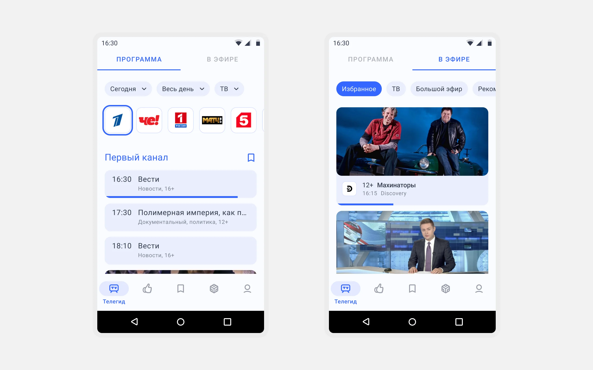
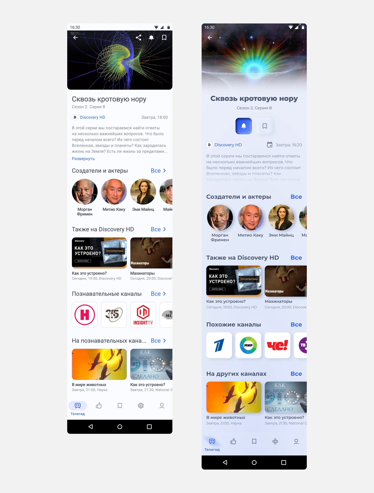
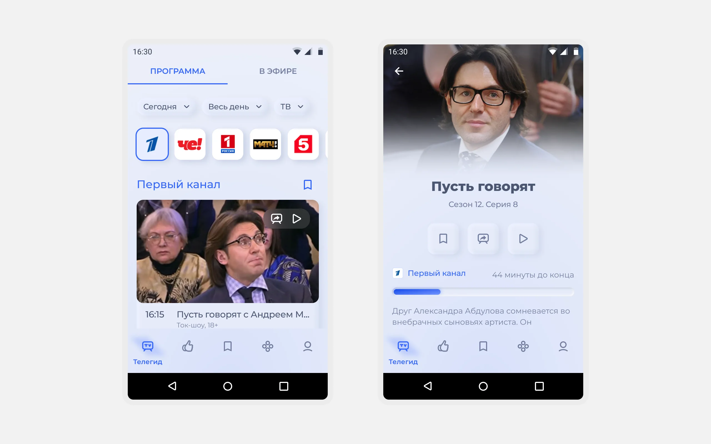
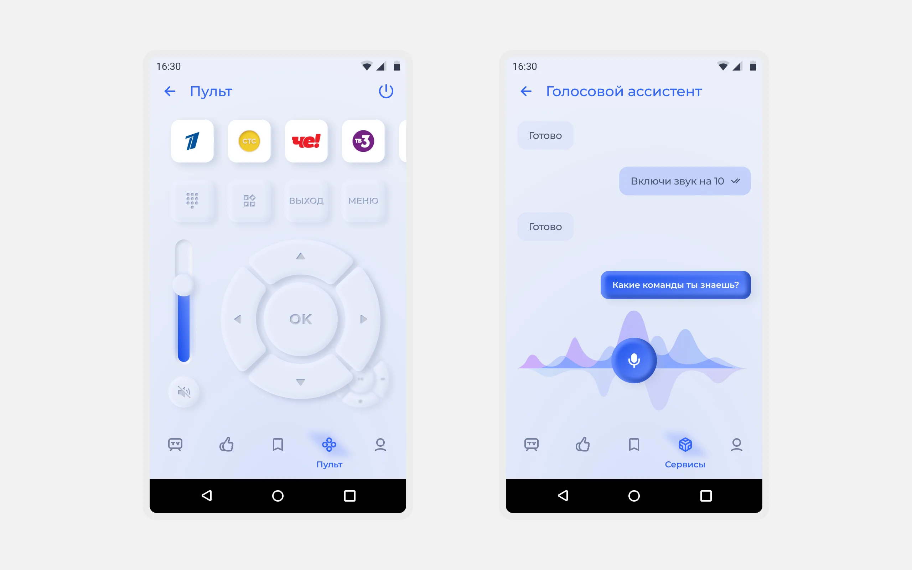
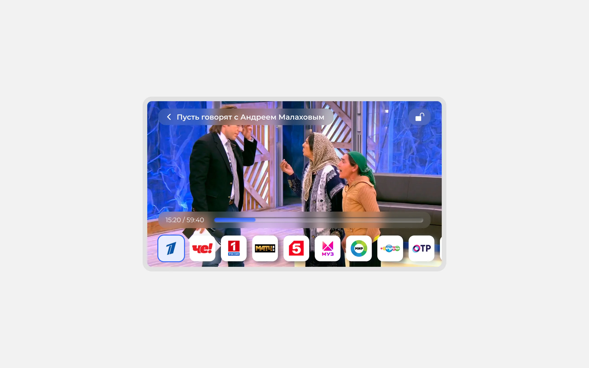
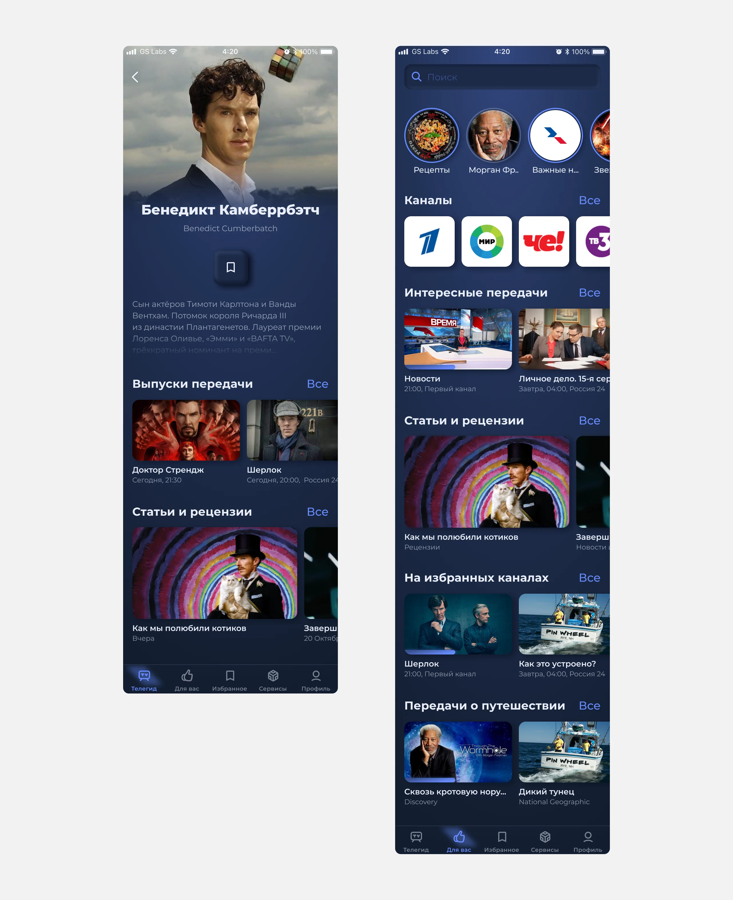
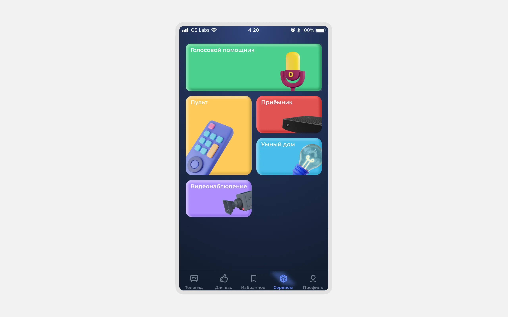

MVP за 4 месяца:
цена скорости
и чужого видения
Триколор, один из крупнейших спутниковых операторов России (12,3 млн абонентов), заказал у GS Labs мобильное приложение «Второй экран»: персональное управление ТВ с телефона. Я спроектировала продукт с нуля: расписание передач, трансляцию спутникового ТВ на телефон, запись, напоминания, голосовое управление, офлайн-режим.
пользователей
в сторе
релиза
в основу ТВ-приложения

У абонентов была приставка, но не было способа управлять ТВ с телефона
В 2022 году у НТВ-Плюс, МТС и Телекарты уже были мобильные приложения для управления ТВ. У Триколора с 12,3 млн абонентами — нет. Телефон не был связан с приставкой, персонализация не работала на общем телевизоре, абоненты пропускали нужные передачи. Триколор проигрывал конкурентам и терял точку контакта между сеансами у телевизора.
Триколор провёл исследование аудитории, изучил поведение пользователей существующих ТВ-приложений. Данные говорили сами за себя:
- 63% регулярно проверяют расписание на телефоне,
- 51% не хватало удобного поиска по программе передач,
- 44% хотели составлять списки и ставить напоминания,
- 40% ждали персональных рекомендаций. На общем телевизоре персонализации нет.
Ключевые решения из десятков принятых за год
1. MVP (замена исследования)
Когда полевых тестов нет, чем закрывать дыру
Контекст. Триколор передал данные исследования, мы знали что болит. Но как пользователи ведут себя в интерфейсе, не знали: полевых интервью не было. Нужно было выйти в стор за 4 месяца. Аудитория возрастная, часто вне крупных городов, с низкой вовлечённостью в онлайн-видеосервисы.
Решение. Рассматривала вариант провести экспресс-интервью с 5–7 пользователями за 2 недели: отвергла, не помещалось в таймлайн. Дополнила данные заказчика своим конкурентным анализом: изучила приложения НТВ-Плюс, МТС, открытые отзывы пользователей похожих продуктов.
Каждый сценарий и флоу согласовывала с заказчиком до детального дизайна. Это заменяло итеративный тест с реальными пользователями. Для возрастной аудитории намеренно убирала лишние шаги: короткий онбординг, персонализация ленты с первого экрана.
Результат. Android MVP появился в Google Play через 4 месяца, следом iOS. В обеих платформах светлая и тёмная темы. Но скорость обошлась дорого: жалобы на подключение к приёмнику, рост нагрузки на техподдержку. Продукт работал и требовал доработки.

Телегид и «В эфире». MVP (Android)
2. Второй релиз (редизайн)
Новый функционал и редизайн, который пришлось принять
Контекст. После первого релиза заказчик поставил задачу: редизайн на неоморфизм. MVP был в плоском дизайне, заказчику показалось слишком просто, захотелось визуально выделиться. Параллельно пора было наращивать функционал: MVP закрывал базовые сценарии, но половины возможностей в нём ещё не было.
Решение. Редизайн. На неоморфизм я аргументировала против: аудитория возрастная, контрастность критична, стиль выбивался из экосистемы Триколора. Заказчик настоял. Спорить дальше смысла не было, поэтому сосредоточилась на том, что могла контролировать. Предложила поэтапное внедрение, от базовых элементов к сложным: так риски в разработке оставались управляемыми, а сроки реальными.
Решение. Функционал. Спроектировала с нуля видеоплеер — в MVP контент вообще нельзя было смотреть на телефоне, приложение оставалось только программой передач. Добавила голосовой ассистент, пульт для управления приставкой, трансляцию контента на ТВ, офлайн-режим.
В телегиде переработала навигацию по обратной связи от первого релиза. Главное правило, которое держала: не сломать привычные пути. Аудитория возрастная, для неё каждая новая фича — это риск растеряться.
Результат. Второй релиз вышел в срок. Новые сценарии, то, чего в MVP не было вообще: теперь телефон стал полноценным пультом и экраном, а не просто программой передач.
По неоморфизму — в процессе разработки выяснилось, что реализация теней на Android значительно сложнее, чем на iOS, что замедлило команду. Читаемость на возрастной аудитории пострадала. Оба риска проявились уже после того, как решение было принято.
С неоморфизмом ограничились тем, что могли контролировать: процессом, не решением. Словесный аргумент проигрывает данным. Сейчас бы настояла на показе прототипа с тестом контрастности абонентам до принятия решения.

До → После: плоский дизайн → неоморфизм (Android)

Телегид и текущее событие EPG. Второй релиз (Android)

Пульт и голосовой ассистент. Второй релиз (Android)

Видеоплеер. Второй релиз (Android)
Как Senior Product Designer на проекте
- Команда из 3 дизайнеров: 2 сеньора и 1 джуниор. UI Kit, весь iOS и тёмная тема — это моя работа. Второй сеньор закрывал параллельно свою часть задач.
- На каждом этапе одновременно прорабатывала сценарии, флоу, архитектуру навигации и подбирала цветовую палитру, тени, скругления, форму элементов. Это помогало согласовывать с заказчиком цельный продукт и не возвращаться назад на поздних этапах.
- На втором релизе выстроила работу с джуниор-дизайнером: она адаптировала мои iOS-экраны под Android и собирала Android UI Kit. Первые месяцы работали вплотную, к концу третьего она закрывала задачи самостоятельно.

Карточка актёра и раздел «Для вас». Тёмная тема (iOS)

Сервисы. Тёмная тема (iOS)
Два релиза и запрос на TV-приложение
Релиз 1
MVP: Android + iOS + тёмная тема
Телегид, трансляция ТВ на телефон, запись передач, напоминания, персонализация ленты.
Релиз 2
Редизайн + новый функционал
Полноценный видеоплеер, голосовой поиск, дистанционное управление ТВ-приставкой, офлайн-режим просмотра.
330K активных пользователей, 188K подписчиков.
Триколор инициировал разработку ТВ-приложения на базе мобильного. Для меня это подтверждение: продукт закрыл реальную потребность и заслужил доверие для следующего шага.
Что я бы сделала иначе
- Вопрос о формате продукта стоило поднять на старте. Часть фич можно было интегрировать в существующий продукт Триколора. Команда это понимала, но никто не вынес на обсуждение. Сейчас бы сделала это сама.
- Данные исследования показывали что болит, но не как пользователи ведут себя в интерфейсе. Юзабилити-тест до редизайна дал бы конкретные факты вместо мнения. Именно поэтому аргументы по неоморфизму не убедили.
- Скорость выхода стоила качества технической реализации. Жалобы на подключение к приёмнику были предсказуемы, но никто не поднял этот риск заранее. Сейчас бы настояла на техническом буфере перед релизом.